Historia
La selección de España conocida como la roja es una de las selecciones más importantes de Europa y del mundo. Su historia en los Mundiales comenzó en 1934 en Italia, donde tuvo una buena actuación para ser su primera participación. España eliminó a Brasil y llegó a los cuartos de final pero quedó eliminada por Italia, el país anfitrión y futuro campeón.
Después de varios años sin participar debido a diferentes situaciones históricas España volvió a disputar un mundial en 1950. En aquella competición consiguió una de sus mejores actuaciones hasta ese momento. Terminó en cuarto lugar, posición que durante muchos años fue su mejor resultado en la Copa del Mundo.
Durante las décadas siguientes España tuvo participaciones irregulares. Estuvo presente en los Mundiales de 1962, 1966, 1978, 1082, 1086, 1990, 1094, 1998 y 2002 aunque no consiguió llegar a una final.
El momento más importante de la historia de España llega en el Mundial de Sudáfrica 2010. La selección dirigida por Vicente del Bosque comenzó el torneo con una derrota frente a Suiza pero consiguió recuperarse y avanzar. En las eliminatorias venció a Portugal, Paraguay y Alemania llegando a la final contra Países Bajos. El partido fue muy disputado y terminó 0 a 0 durante los 90 minutos, en el tiempo suplementario Andrés Iniesta marcó el gol que le dio a España su primer mundial de la historia. De esta manera España se convirtió en campeona del mundo por primera vez.
Después de esa conquista España llegó al mundial de 2014 como subcampeona defensora pero tuvo una actuación muy diferente. Perdió 5 a 1 contra Países Bajos y posteriormente quedó eliminada en la fase del grupo.
En el Mundial 2026 España volvió a ser historia al conquistar su segundo título mundial. En la final disputada el 19 de julio del 2026 España derrotó a Argentina por 1 a 0 en el tiempo suplementario gracias a un gol de Ferrán Torres en el minuto 106. El equipo dirigido por Luis de la fuente dominó un gran parte del partido y demostró un gran nivel de juego. Con esta victoria España volvió a ser campeona del mundo después de 16 años y sumó su segunda estrella luego del título conseguido en Sudáfrica 2010.


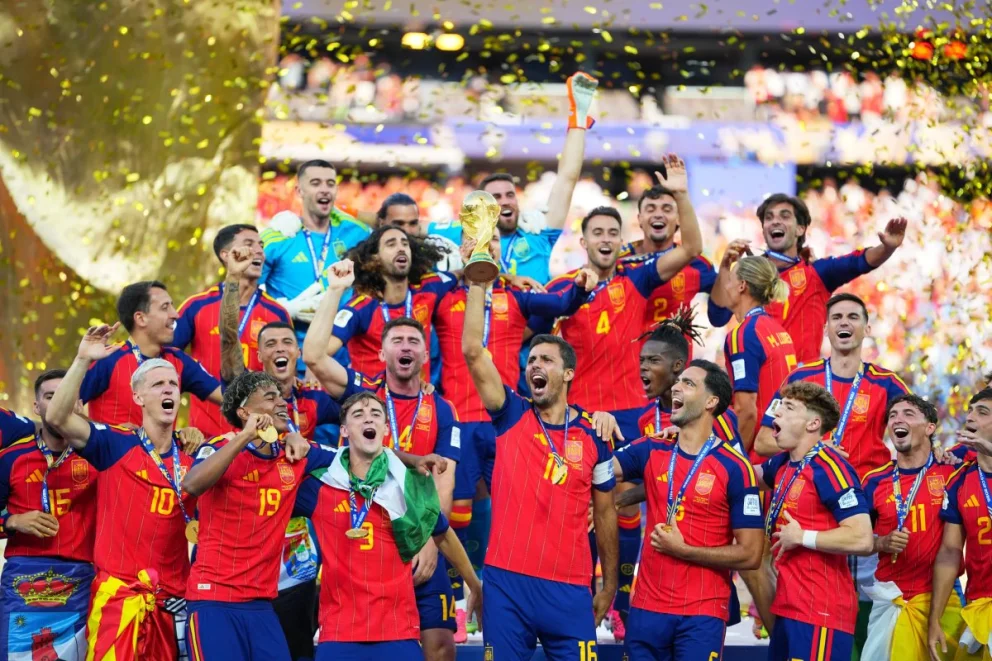
Arqueros


Defensas

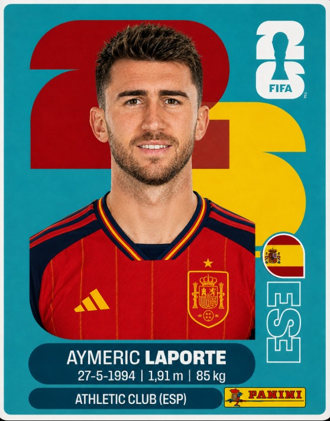
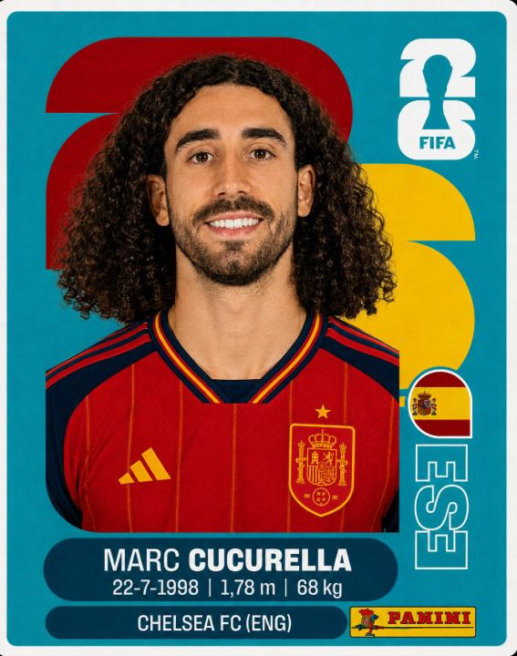
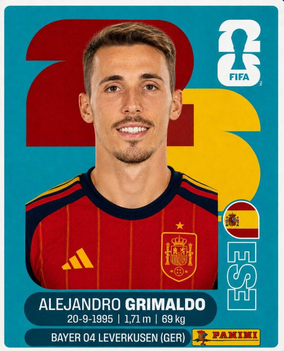
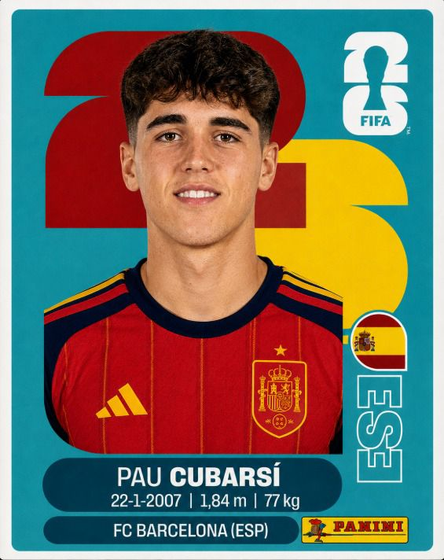
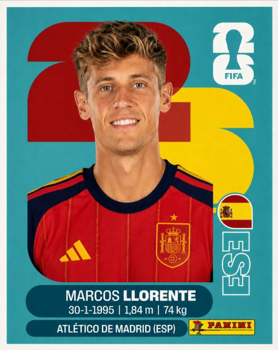
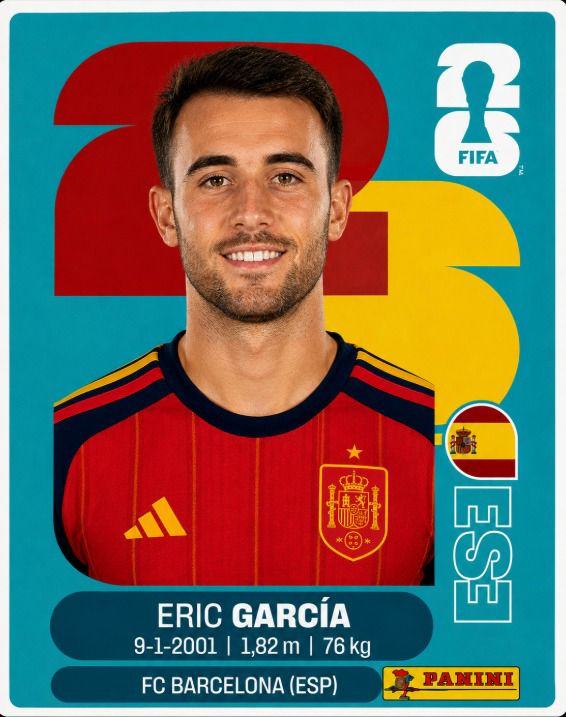
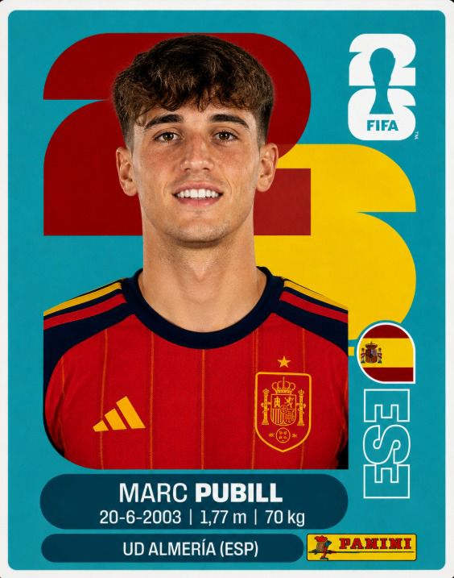
Mediocampistas
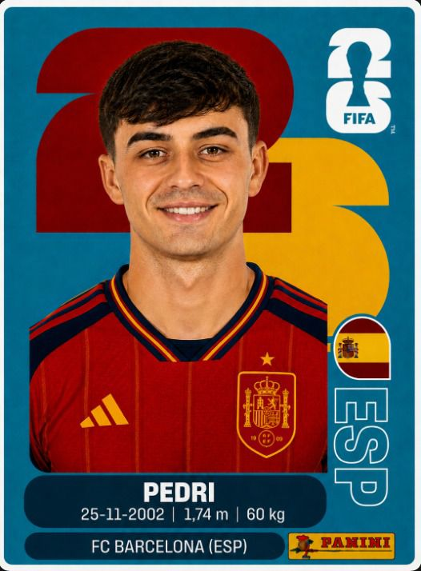
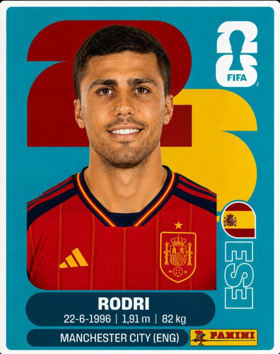
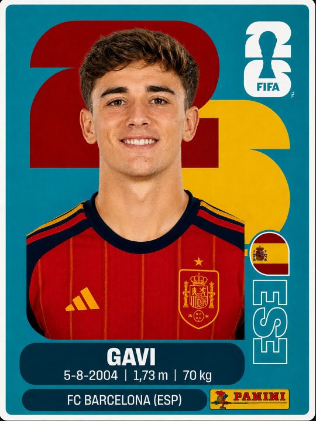

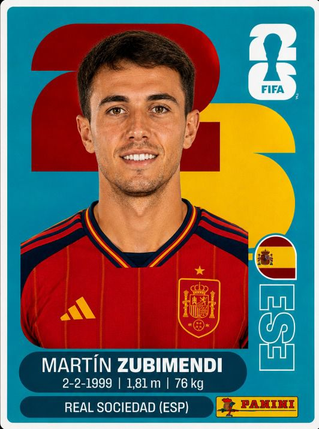
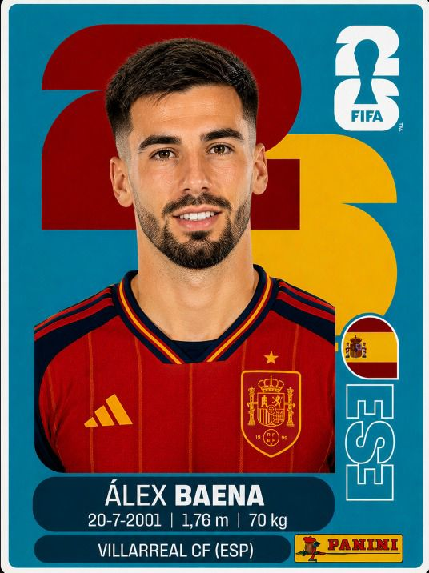
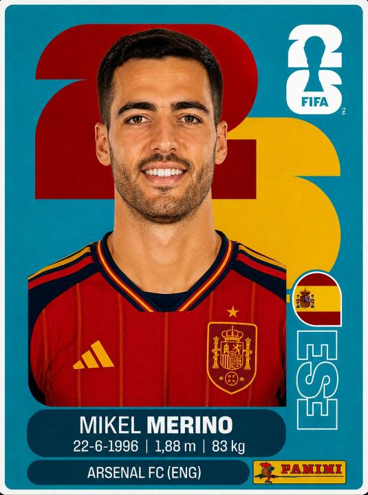
Delanteros

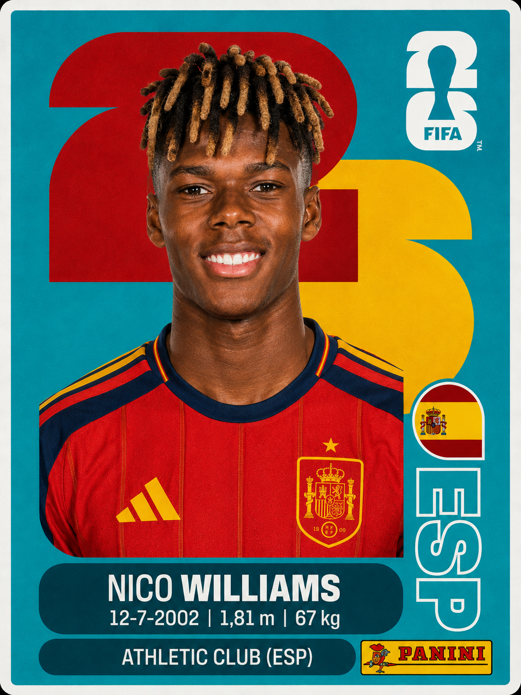
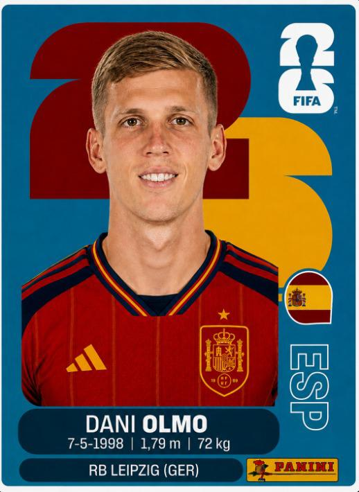
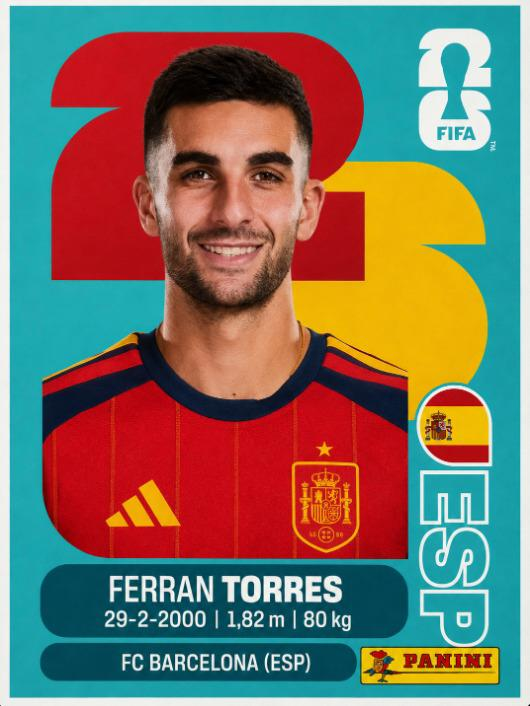
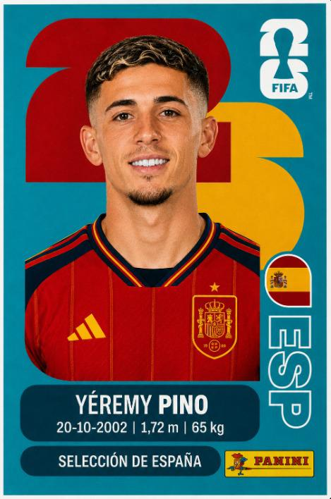
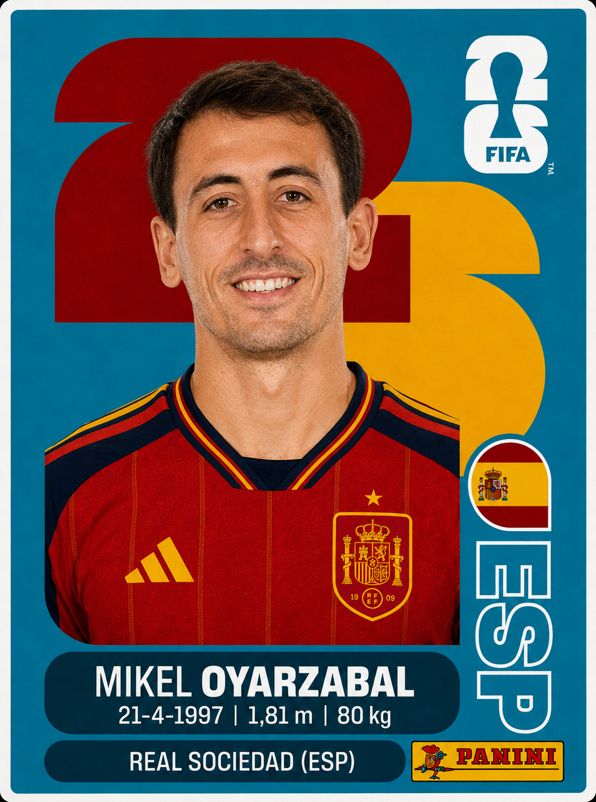

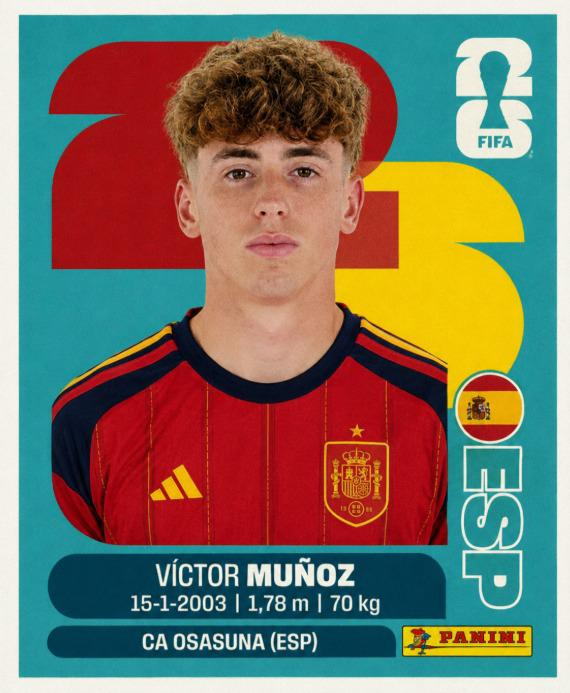
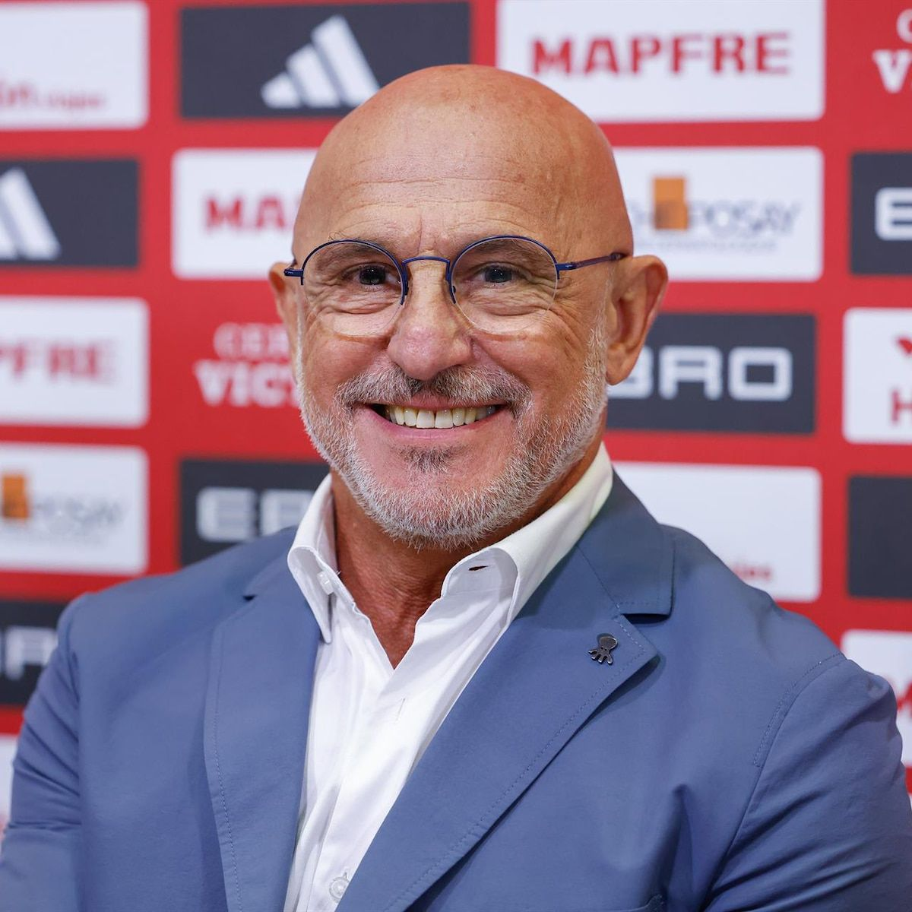
Luis de la Fuente es el actual entrenador de la selección española. Asumió el cargo en 2022 después de haber trabajado durante varios años con las categorías juveniles de España donde dirigió a jugadores que luego llegaron a la selección mayor.
Luis de la Fuente comenzó con grandes resultados. En 2023 España ganó la Nations League derrotando a Croacia en la final. En 2024 consiguió otro título muy importante al ganar la Eurocopa venciendo a Inglaterra en la final.
Su principal objetivo es mantener a España entre las mejores selecciones del Mundo y conseguir buenos resultados en los próximos mundiales.

Camiseta oficial

Camiseta suplente

Camiseta de calentamiento

Camiseta de entrenamiento

Curiosidades
- El gol más importante de su historia lo hizo Andres Iniesta en el minuto 116 de la final contra países bajos en Sudafrica 2010. Ese fue el único gol en una final mundialista de España.
- España nunca llegó a otra semifinal de un Mundial además de 2010. Su segundo mejor resultado fue el 4to puesto en 1950.
- La selección española tiene fama de "pechear" historicamente: durante décadas tenia equipazos pero casi siempre quedaba eliminada en cuartos o antes. Por eso el título de 2010 fue tan especial.
- En el mundial 2002 sufrió una de las eliminaciones mas polémicas de la historia contra Corea del Sur. Le anularon dos goles y perdió por penales.
- David Villa es el máximo goleador español en mundiales. En 2010 hizo 5 goles y fue clave para ganar la copa
- En Qatar 2022, España le ganó 7-0 a Costa Rica, fue la mayor goleada española en la historia de los mundiales
- En 2026 ocurrió algo histórico: España presentó una convocatoria sin jugadores de Real Madrid FC por primera vez en un mundial.